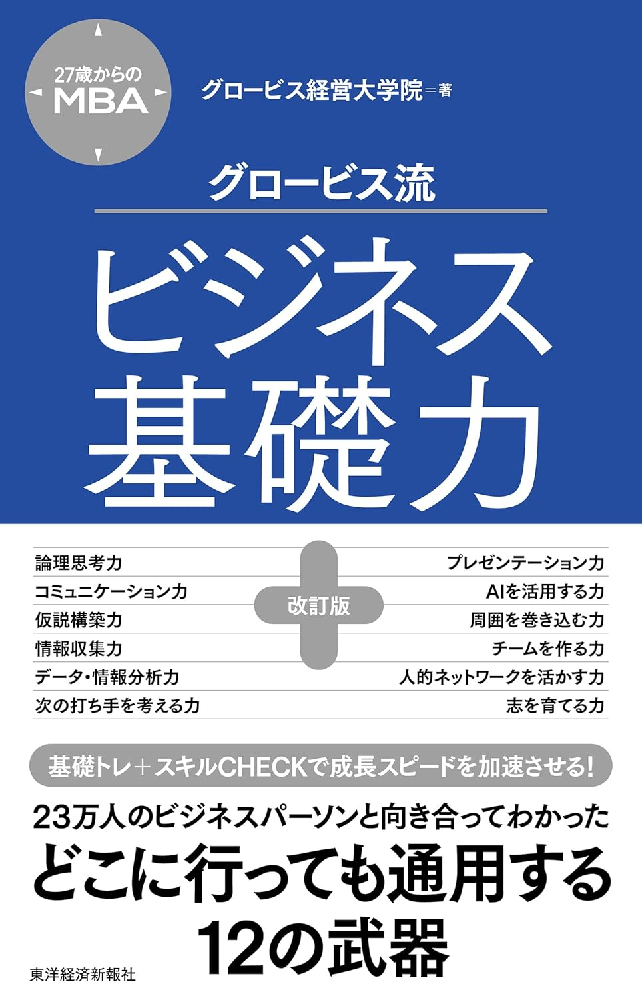

先着20名 ファウンディングメンバー募集中生成AI × リーン・スタートアップ
12週間で、生成AIを武器に新規事業をPMFまで導く。
最短12週間のカリキュラム。自分のペースで進められるサブスクリプション型の実践プログラム。
28日間返金保証いつでも解約OKクレカ登録なしで無料体験
0+
累計受講者数
0
動画本数
0名
ファウンディング枠
0週
プログラム期間
最短12週間のカリキュラム。自分のペースで進められるサブスクリプション型の実践プログラム。
ChatGPTで文章は書ける。画像も作れる。でも、それが売上になる道筋が見えない。
「これは売れるはず」という直感。でも、誰に聞けばいいのか、どう確かめればいいのか。
Product Market Fit。概念は理解した。でも「今やるべき次の一手」が分からない。
本、YouTube、Udemy。情報はあるが、バラバラで実践に落ちない。体系的に学びたい。
そのモヤモヤには、名前があります。
「検証なき構想ループ」──「リーンAIスタートアップ講座」で、ループから抜け出せます。
生成AIは単なるツールではありません。起業プロセスそのものを構造的に変える「新しいOS」です。
出典：芝先恵介『AI駆動新規事業の教科書』シリーズ（note.com/01start）
理論を学ぶだけではありません。12週間かけて、あなた自身の事業仮説を実際に検証します。
AIで100のアイデアを量産し、リーンキャンバスで「Plan A」を作成
顧客インタビューを実施し、本当の課題を特定（CPF達成）
マフィアオファーを設計し、「お金を払ってでも欲しい」を確認（PSF達成）
MVPrを構築し、実際の市場で検証（PMF達成）
ユニットエコノミクスを設計し、持続的成長の基盤を構築
動画を観るだけでは終わらない。インプットからアウトプットまで、一貫した学習サイクルを回します。
毎週AIを実践活用。各Weekにクイズと演習が付き、「やっただけ」で終わらせません。

12年間の起業・失敗・再挑戦の実体験と、田所雅之氏のStartup Adviser Academyで体系化されたメソッド、リーンスタートアップの世界的権威 Ash Maurya 氏から直接学んだ仮説検証フレームワーク ── この2つを融合し、生成AIの力で12週間に凝縮しました。
Week 1「起業家マインドセットとビジネスモデル設計」。全15動画・約3.4時間を、完全無料でお試しいただけます。
カリキュラムは推奨12週間。早く終えても、じっくり進めても、サブスク継続中は全コンテンツにアクセスできます。
5名以上でのご利用をお考えの場合は 法人プランについてお問い合わせ ください。
「独学でもできるのでは？」──その疑問に、正直にお答えします。
「教科書の著者本人のAIアバターが、全コマ教える」── 他では得られない唯一の学習体験です。
はい。リーンAIスタートアップ講座で使うAIツールはChatGPTなどの対話型AIが中心です。プログラミングの知識は一切不要です。AIの使い方も講座内で丁寧に解説します。
PC、スマートフォン、タブレットなど、ブラウザが使えるすべてのデバイスで視聴できます。通勤中はスマホで、自宅ではPCでなど、ご自由にお使いいただけます。
週あたり約3〜4時間が目安です。1日30分程度の視聴で無理なく進められます。動画は10〜20分の短い単位で構成されているので、スキマ時間でも学習できます。
推奨ですが必須ではありません。ただし、演習に取り組むことで学びが定着し、12週間後に具体的な成果物が手元に残ります。実践されることを強くおすすめします。
はい。全12週間のカリキュラムを完了すると、修了証をPDFで発行します。
サブスクリプション継続中は、全コンテンツに無期限でアクセスできます。自分のペースで何度でも復習可能です。
3つの点で異なります。(1)「リーンAIスタートアップ講座」は教科書の著者自身が設計した唯一の講座 (2) 理論だけでなく12週間で実際にビジネスモデルを検証する実践型 (3) CPF→PSF→PMFの一気通貫フレームワークで、断片的な学びではなく体系的に習得できます。
月1回のライブQ&Aセッション（ウェビナー形式）で講師に直接質問できます。また、各動画のコメント欄やメールでの質問にも対応しています。
はい。月額プランはいつでも解約可能で、違約金はありません。解約後も、その月の末日まで視聴を続けられます。
はい。5名以上でご利用の場合は法人プランをご用意しています。人数に応じたお見積りを作成いたしますので、お問い合わせフォームからご連絡ください。
12週間後、あなたの手元には「検証済みのビジネスモデル」があります。アイデアを温めるだけの日々は、今日で終わりにしませんか。
28日間返金保証 / いつでも解約OK / ファウンディング価格は永久適用